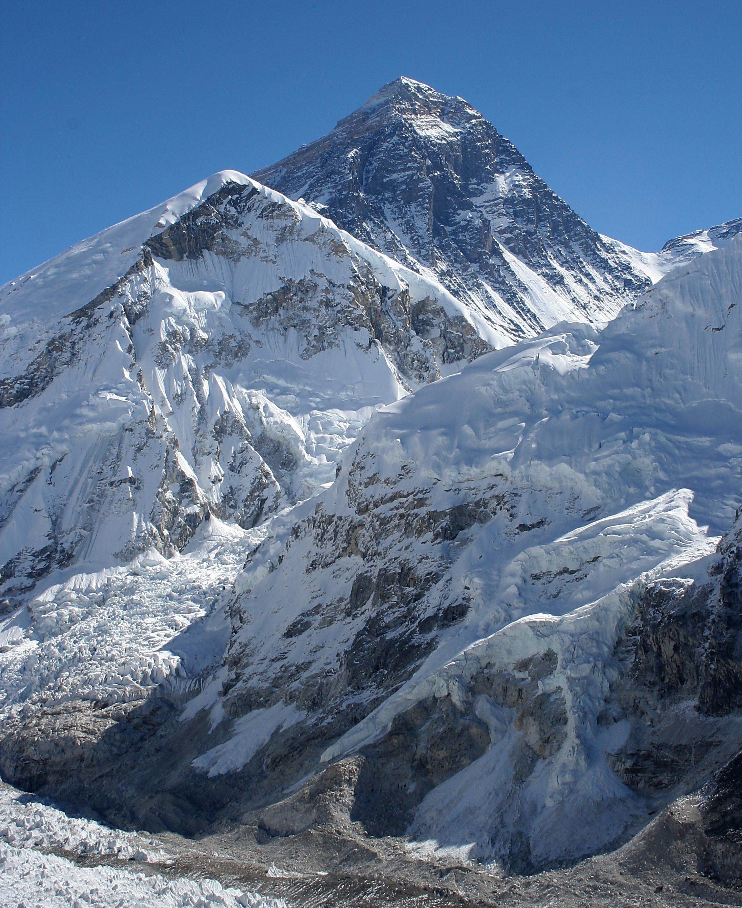

 «Джомолунгма» у перекладі з тибетської означає «Божественна (qomo) Життя (lung — вітер чи життєва сила) Мати (ma)», названо її на честь бонської богині Шераб Чжаммі. Непальська назва Джомолунгми — «Сагарматха» — означає «Вершина неба». Англійською мовою гору названо Еверестом (англ. Mount Everest) на честь сера Джорджа Евереста (1790—1866 рр.), керівника геодезичної служби Британської Індії в 1830–1843 рр. Цю назву запропонував 1856 року наступник Дж. Евереста — Ендрю Во (англ. Andrew Waugh, 1810–1878 рр..) Це зробили одночасно з публікацією результатів роботи його співробітника, Р. Сікдара, який 1852 року вперше виміряв висоту «Піка XV» і довів, що він є найвищим у регіоні та, імовірно, в усьому світі. Розташування Гора розташована на кордоні між Тибетським автономним районом (округ Шигацзе) в Китаї і зоною Сагарматха (район Солу Кхумбу) у Непалі. Пік здіймається на 8848 метрів над рівнем моря в гірському масиві Гімалаїв Маланґур Гімал (англ. Mahalangur Himal), і є найвищою точкою світу та найвищою з семи вершин. Джомолунгма розташована за 160 км на північний схід від Катманду, за 260 км на північний захід від Тхімпху і за 450 км від Лхаси, за 600 км на північ від Калькутти і Бенгальської затоки. Найближчими вершинами, висотою понад 8000 метрів, є Лхоцзе (висотою 8516 метрів) за три кілометри прямо на південь, Макалу (8463 метри) — за двадцять кілометрів на південний схід, і Чо-Ойю (8201 метр) — за двадцять вісім кілометрів на північний захід.